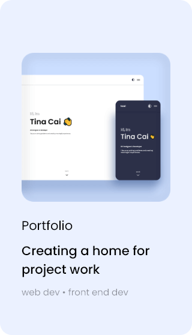
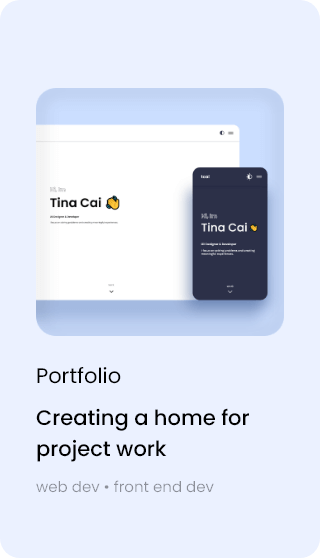
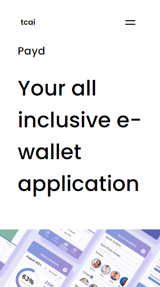
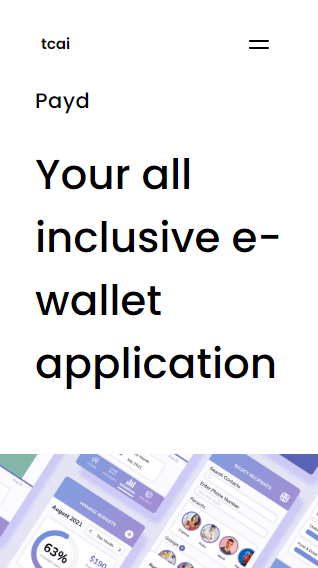
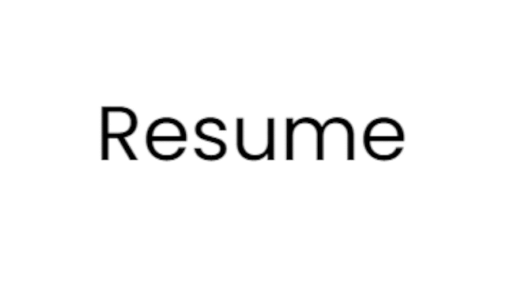

Design Portfolio
Creating a home for project work

problem
How can I display my design skills, style, and aptitude to other designers and potential recruiters?
The goal of this online design portfolio is to provide a platform to showcase my work and introduce myself into the design world.
This project also serves as a medium for me to practice and demonstrate my understanding of front-end development and web design.
responsibilities
UX / UI Designer
Front-End Dev
design tools
timeframe
Nov-Dec 2021
(1 month)
The structure 🧱
HTML
As I was re-learning HTML, I based my web structure on sample wireframes.
Following the samples, I used the IDE, Atom, to write the initial structure system in HTML.

The repository 💼
github
I needed a way to store, track, and share my work. You know, in case life happens.
I used GitHub Desktop to create a repository for my work. This was useful because it allowed me to back-up, commit, and track my changes as I worked on my portfolio.
I anticipate when I work on team projects, GitHub will be more useful for reviewing and working on shared files. Although my design portfolio is a solo project, sharing and updating it on GitHub felt like good practice.
The style 🎨
css
Sometimes, it's ok to stray away from the norm.
I began writing CSS rules to emulate the sample wireframes' style and element positioning. But the more I wrote and watched my website come together, the more I felt like it wasn't my style.
Although I appreciated the sample wireframes being lo-fi to allow room for creativity, I felt like I was constantly making design decisions as I went and second guessing minor details.

low fidelity wireframes
Unsatisfied with the sample wireframes, I began sketching my own lo-fi wireframes in pencil and paper.
As I sketched in lo-fi, I annotated my wireframes with ideas for micro animations and interations to make my portfolio feel more unique and personal.

high fidelity wireframes
I needed refined wireframes to guide my portfolio's development. After all, I wouldn't pass lo-fi wireframes straight to development and call it a day, as lo-fi sketches wouldn't provide enough information to develop a finished site.
I used Adobe XD to bring what I sketched to life through hi-fi wireframes. With XD, I was able to depict what I wanted my portfolio to look like. This provided me both a guideline to stick to and ease of mind from not having to design as I go.
The structure (again) 🧱
mobile-first
I focused on coding my portfolio using a mobile-first approach.
My aim was to both keep my focus on content rather than visual flair (button hovers, animations, etc.) and ensure accessibility for the smallest available screen (iPhone 5SE).
 

html (again)
Armed with an understanding of the new structure of my website, I modified the HTML to match. These modifications weren't too crazy, as I had kept most of the structure as similar to the previous as I could.
The style (again) 🎨
css (again)
Finally, I began re-writing my CSS stylesheets to emulate the mobile wireframes I had mocked up to this point. There were some slight differences as I made minor improvements as I went.
mockup

 

site
responsive design
It's important to cater to multiple user devices.
Although my target audience are likely viewing my portfolio on large screen sizes, it was important that my portfolio site was usable for screens large and small. After completing the css stylesheet for small screen sizes, I added adjustments for medium, large, and x-large sizes.
Not only is responsive design an important concept for me to keep in mind when designing digital experiences, it also makes my design portfolio more adaptable. You never know what device a recruiter or hiring manager might be viewing my portfolio site on.

micro interactions
A little flavor doesn't hurt.
I've written the main content of my design portfolio. The next question was, how can I spice up it's style? One solution was through micro interactions.
I re-visited the micro interaction ideas I noted during lo-fi sketching. It was important that these interactions helped not hurt the functionalities of my site.
logo and link hover
menu icon (+ animation)
pointer interaction
menu link hover
animation
Oh, hi there
There's nothing that breaths life into digital art like animation. The sample wireframes suggested animating clip art of my home town, but I wanted something simpler. Emojis are a recurring theme in my portfolio, why not make them move?
To avoid too much movement, I animated the hand in my hero section to wave on hover - just a little easter egg for wandering cursors.
The scripts 📃
javascript
Micro interactions are fun, but they don't provide any concrete functionality to the site.
I created a JavaScript file to add some real interactivity within my site. To make life simpler, I added the library, jQuery, to my HTML pages.

side menu
I needed a way to traverse my site's pages.
I wrote a script for opening and closing a side menu. Of course, the script requires a connection to HTML and CSS to work properly. I edited the navigation elements in my HTML, then styled it's contents in CSS.
However, I ran into an error when testing on small screens. The menu fills the screen and it's icon isn't fixed, so visitors couldn't close the menu without leaving the page on small devices. To fix this, I adjusted the HTML to close the menu when clicking links. Press the menu icon to check it out! 👉
slideshows
I needed a way to display multiple pictures.
One of the many glories of writing in widely used development languages is the resources I can adopt from others. It was important that I implemented a slideshow function for my site so I could show off multiple, related pictures in one HTML element.
Scouring the web, I found a plugin called Slick. It was easy to implement, and after adjusting it's CSS stylesheet, I created beautiful slideshows that matched my site's aesthetic.
Portfolio testing 🧩
usability test
Does my portfolio even work?
I tested my portfolio site by observing how participants completed specific scenario tasks. Participants were instructed to act as a Design Team Lead looking to hire a new UX designer; a potential target audience of my portfolio.
The goals of this usability test were to observe whether participants were able to: Learn about my projects, Learn about me, Find my resume, and Contact me.
I compiled the usability test data into a Rainbow Spreadsheet, which grouped partcipant feedback and prioritized site errors to be addressed.
error addressal
I addressed each site error in order of priority based on the spreadsheet. Most errors were rated at low severity and were easy to address, as described in the Rainbow SpreadSheet.
Issue: Users had trouble finding where to learn more about me.
Severity: Low
Evidence: Two of six test participants navigated to the portfolio project when looking for where to learn more about me.
Solution: Change the name of the portfolio project to make it more clear that it's a project of its own.

Visual flair 🧨
background colors
One recurring test feedback was that the index page was too plain.
To address this, I wanted to apply full page scrolling in the work section to add personality but still maintain a minimalistic approach. After plenty of search and experimentation, I couldn't find a plugin that worked well.
I eventually found a pure CSS method that utilized the scroll-snap property. However, the functionality was finicky. Users had to scroll to a specific spot of the page to full scroll properly.
In the end, I opted for simplicity and found a plugin that changed the site background color depending on the content of the screen. I adjusted the style to fit the work section and was happy with the result.
tab messages
"Please Click Me 🥺"
While exploring sample design portfolios, I noticed one had a peculiar tab name when it wasn't in focus. It said to "remember to check out the site before closing".
I thought it'd be a neat idea to add to my own portfolio, so I found a similar plugin in codepen. Hopefully it grabs someone's attention like it did mine.
ripple button
I was originally using simple ellipses as buttons, but I wanted to add more fluidity to my portfolio. I found an interesting direction-aware dynamic ripple button plugin. After editing its CSS to fit the style of my site, the ripple button provided the movement I was looking for.
parallax
I noticed many professional sites utilized parallax to enhance images and provide movement. I found a plugin to add parallax to my images. The movement is subtle, but parallax makes images look a lot less static.

The portfolio 🌐
github pages
After all this work, it was time to deploy my website.
After learning about the various ways to host an online website, I decided to utilize GitHub pages for now. GitHub pages allows me to provide a live link to my site, and I was already updating the site on GitHub anyway. The url isn't ideal, but for now, that doesn't affect the portfolio's purpose.
At some point, I'll likely host my site on a different server so I can customize the domain. I'd link my portfolio, but you're already on it!
The takeaways 🤔
Challenges
-
Wireframes
Working with sample wireframes would have gotten my portfolio ready and out there earlier, but I already had experience with front end development and I didn't want to develop a site that I'd eventually change entirely. Next time I work on a website, I know to work on wireframes ahead of time.
-
Hand Coding
Since this is my first time working on an official website, I hand coded most of it. I know this isn't actually practical most of the time - I'd likely use frameworks in the future. But still, it was great practice.
-
IDE
I initially downloaded Atom to follow the sample wireframes instructions. At some point during my project, Atom froze and I could never get it to work again. I switched to vsCode since I'm familiar with it anyway - I think it's better to work on something I understand more when learning new concepts.
next steps
-
More case studies
Overall, I've gotten great feedback about my site's functionalities from usability testing and my mentor. My next steps for improving my site are to add more case studies.
Afterwords, I will gather feedback from my career specialist to assess whether my case study content is clear and concise enough so that they are ready for the eyes of recruiters and hiring managers.
-
Hero content art
I aim to add my own personal art to the hero section of my portfolio. I've been told it was quite plain so I've been thinking about how to fill in the white space. I've been practicing sketching during free time and I think the hero section would be a great place to showcase that work to add more personality to my portfolio.